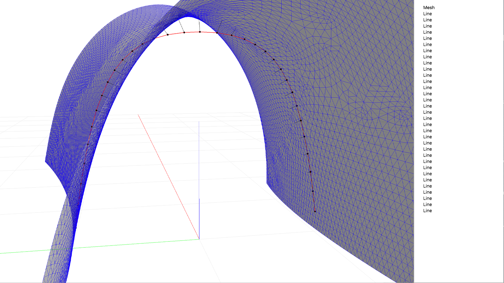

Best-fit Arch

import os
from trimesh import Trimesh
from numpy import array
from time import time
from compas_cem import JSON_DATA
from compas_cem.diagrams import FormDiagram
from compas_cem.equilibrium import force_equilibrium
from compas_cem.optimization import Optimizer
from compas_cem.optimization import PointGoal
from compas_cem.optimization import TrimeshGoal
from compas_cem.optimization import TrailEdgeConstraint
from compas_cem.optimization import DeviationEdgeConstraint
from compas_cem.plotters import FormPlotter
from compas_cem.viewers import FormViewer
from compas.datastructures import Mesh
from compas.datastructures import network_transformed
from compas.geometry import Frame
from compas.geometry import Plane
from compas.geometry import Transformation
# ------------------------------------------------------------------------------
# Data
#-------------------------------------------------------------------------------
IN_MESH = os.path.abspath(os.path.join(JSON_DATA, "lightvault.json"))
IN_ARCH = os.path.abspath(os.path.join(JSON_DATA, "arch_optimized.json"))
OUT_ARCH = os.path.abspath(os.path.join(JSON_DATA, "arch_optimized.json"))
optimize = True
plot = False
view = True
export = False
# ------------------------------------------------------------------------------
# Target Mesh
# ------------------------------------------------------------------------------
mesh = Mesh.from_json(IN_MESH)
vertices, faces = mesh.to_vertices_and_faces()
vertices = array(vertices).reshape((-1, 3))
faces = array(faces).reshape((-1, 3))
trimesh = Trimesh(vertices=vertices, faces=faces)
# ------------------------------------------------------------------------------
# Form Diagram
# ------------------------------------------------------------------------------
form = FormDiagram.from_json(IN_ARCH)
force_equilibrium(form)
# ------------------------------------------------------------------------------
# Initialize optimizer
# ------------------------------------------------------------------------------
optimizer = Optimizer()
# ------------------------------------------------------------------------------
# Define goals / Targets
# ------------------------------------------------------------------------------
for node in form.nodes():
optimizer.add_goal(TrimeshGoal(node, trimesh))
# ------------------------------------------------------------------------------
# Define optimization parameters / constraints
# ------------------------------------------------------------------------------
bound_t = 0.025
bound_d = 0.07
for edge in form.trail_edges():
optimizer.add_constraint(TrailEdgeConstraint(edge, bound_t, bound_t))
for edge in form.deviation_edges():
optimizer.add_constraint(DeviationEdgeConstraint(edge, bound_d, bound_d))
# ------------------------------------------------------------------------------
# Optimization
# ------------------------------------------------------------------------------
if optimize:
# record starting time
start = time()
# optimization constants
opt_algorithm = "LD_LBFGS" # LN_BOBYQA / LD_LBFGS
iters = 100 # 100
stopval = 1e-4 # 1e-4
step_size = 1e-6 # 1e-4
# optimize
print("Optimizing")
x_opt, l_opt = optimizer.solve_nlopt(form, opt_algorithm, iters, stopval, step_size)
# print out results
print("Elapsed time: {} seconds".format(round((time() - start), 2)))
print("Total error: {}".format(l_opt))
# ------------------------------------------------------------------------------
# Export
# ------------------------------------------------------------------------------
if export:
form.to_json(OUT_ARCH)
print("Exported json file to: {}".format(OUT_ARCH))
# ------------------------------------------------------------------------------
# Plotter
# ------------------------------------------------------------------------------
if plot:
T = Transformation.from_frame_to_frame(Frame.worldYZ(), Frame.worldXY())
form_transformed = network_transformed(form, T)
plotter = FormPlotter(form_transformed, figsize=(16, 9))
plotter.draw_nodes(radius=0.025, text="key")
plotter.draw_edges(text="attr")
plotter.draw_loads(scale=2.0)
plotter.draw_residuals(scale=1.0)
plotter.show()
# ------------------------------------------------------------------------------
# Viewer
# ------------------------------------------------------------------------------
if view:
viewer = FormViewer(form)
viewer.add_nodes(size=20)
viewer.add_edges(width=(1, 5))
viewer.add_loads(scale=2.0, width=5)
viewer.add_residuals(scale=1.0, width=5)
points = []
for key, goal in optimizer.goals.items():
if not isinstance(goal, PointGoal):
continue
points.append(goal.target_geometry())
viewer.add_points(points, size=30)
viewer.add_mesh(mesh, edges_width=1.0, faces_on=False)
viewer.show()